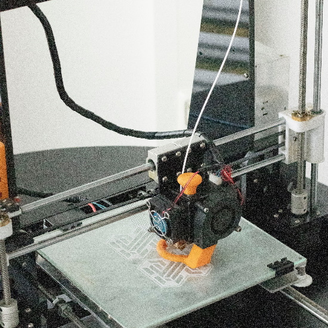
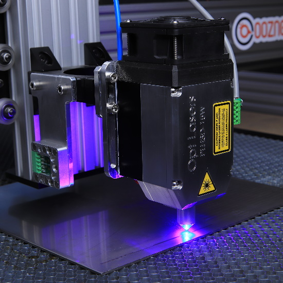
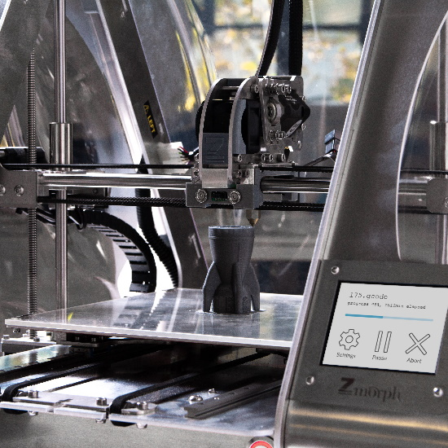
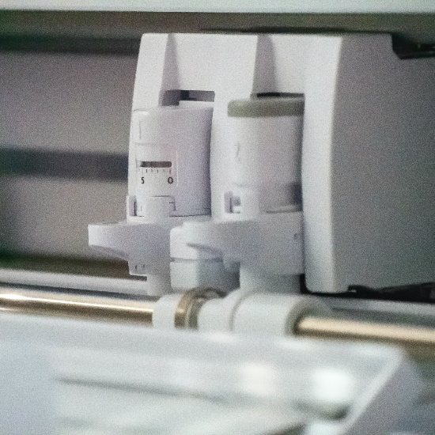
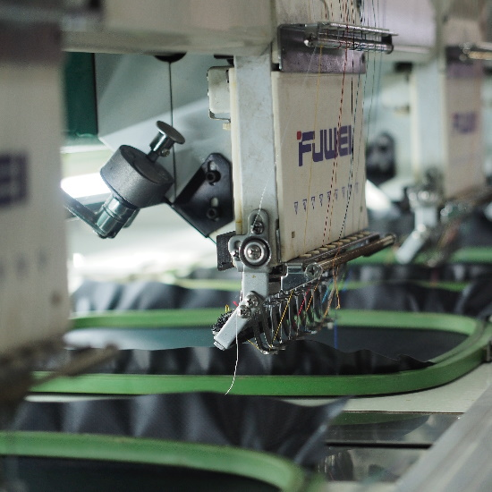
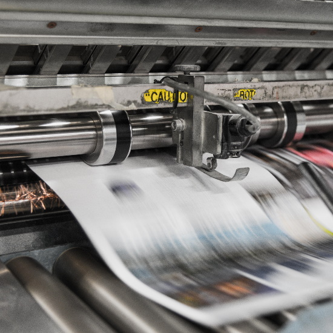

3D-Skrivare

3D-Skrivare är väldigt lätta att använda och är den vanligaste maskinen att använda i makerspacet. 3D-Skrivning är perfekt för dig som vill börja utforska makerspacet och du kan få skriva ut häftiga modeller under tiden.
För att använda 3D-skrivare så fråga valfri styrelsemedlem eller annan makerspace medlem för hjälp! Man kan lära sig på ca 15 minuter.
Laserskärare

Laserskäraren är ett relativt enkelt verktyg att använda när man väl vet hur det funkar, och liknar väldigt mycket vinylskäraren. Skäraren är bra på att gravera in text och mönster i metall, plywood och akryl. Den kan även skära igenom plywood och akryl.
För användning är det obligatoriskt med säkerhetskurs. Kontakta Tim vid intresse. (Email på styrelse-sidan eller discord Tim#1084)
SLA-Skrivare

En SLA-skrivare är som en vanlig 3D-skrivare fast med extremt mycket högre detalj i utskriften då den skriver ut med flytande resin. Den högre detaljen kommer tyvärr på bekostnad av print-yta, samt enkelheten i användningen. OBS: Inte en bild på SLA
Då flytande resin är mycket farligt är det endast styrelsen som startar prints. Kontakta Adam eller Tim.
Vinylskärare

Vinylskäraren liknar starkt laserskäraren i användningen. Med vinylskäraren kan du skära ut tryck för tröjor i gummiliknande plast, men du kan även skära ut klistermärken, visitkort samt andra ting på rulle eller ark.
Fråga kunnig användare om hjälp ifall du vill använda vinylskäraren. Styrelsen kan även hjälpa till.
Brodyrmaskin

Med en brodyrmaskin kan du brodera på tyger av olika slag, men även hårdare material som läder. Det är i princip tryck, fast fastsytt med tråd istället.
Användning kräver genomgång och tillgång till material av styrelsen. Kontakta Tim, Adam eller Hjalmar.
Tryckpress

Tryckpressen kan användas tillsammans med vinylskärarens tryck eller annat tryck för att applicera detta på valfritt tyg.
Användningsguide är en del av vinylskärargenomgången.